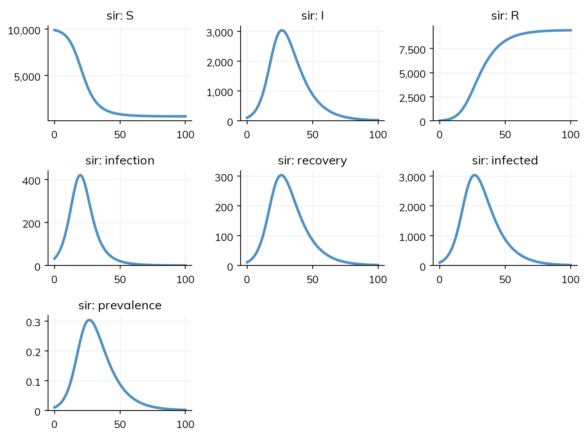
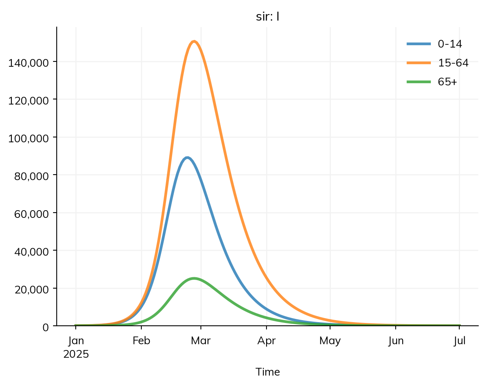
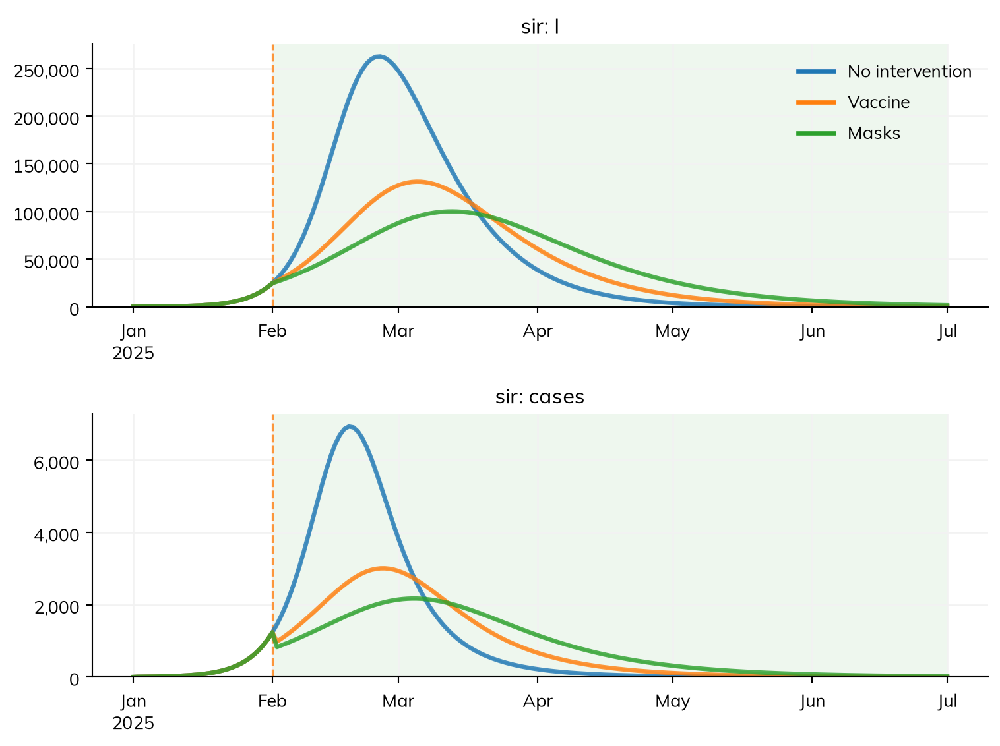
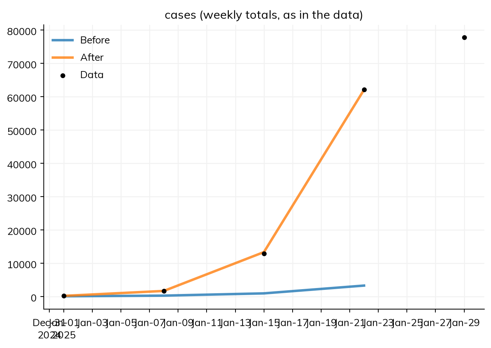
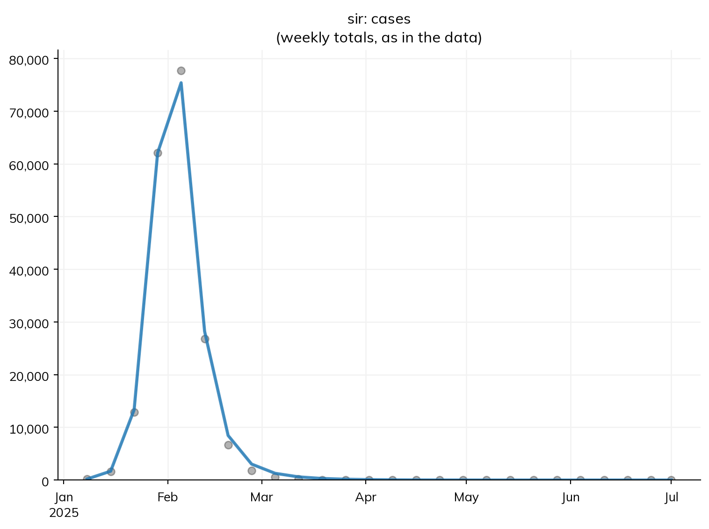
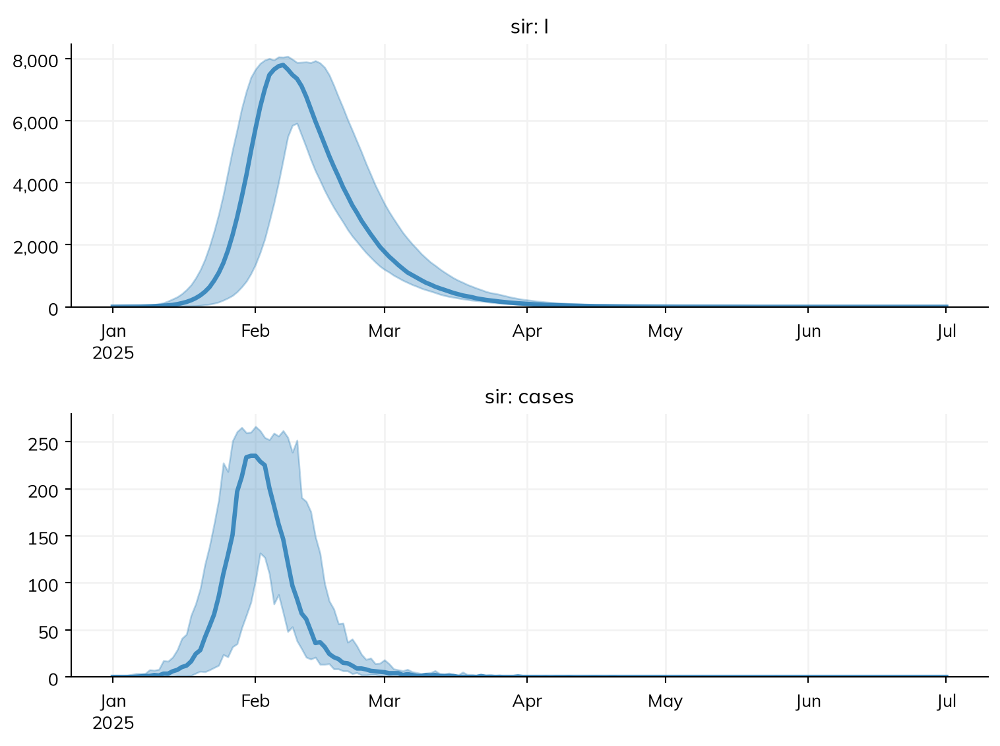

import starsim as ss
S, I, R = ss.states('S I R')
infection = S >> I @ 0.3*I # From S to I, at a rate of 0.3 times the fraction infectious
recovery = I >> R @ ss.days(10) # From I to R, after 10 days on average
sir = ss.Disease(infection, recovery)A tour of Starsim
This page is a ten-minute tour of Starsim. It builds one model step by step: a simple epidemic, then the same epidemic with age groups, an intervention, data to fit it to, and many runs to show the uncertainty. Each step is a few lines of code, and each step says what the code means in the terms of an epidemiological model. The parameters are illustrative, not estimates for any particular disease or setting.
To follow along, install Starsim with pip install "starsim[jax]", then download this page as a Jupyter notebook from the “Jupyter notebook” link beside the page’s contents, and run its cells in order. You can also clone the Starsim repository and open docs/tour.qmd in Jupyter (with jupytext installed, Jupyter opens .qmd files directly).
An SIR model
In an SIR model, everyone is in one of three compartments: susceptible (S), infectious (I), or recovered (R). The model is the standard set of equations:
\[ \begin{aligned} \frac{dS}{dt} &= -\beta \frac{S I}{N} \\ \frac{dI}{dt} &= \beta \frac{S I}{N} - \gamma I \\ \frac{dR}{dt} &= \gamma I \end{aligned} \]
where N = S + I + R is the population size. People move between the compartments along two transitions:
- Infection, from S to I. Each susceptible person is infected at a rate of β times the fraction of people who are infectious, so the number infected per day is β S I / N (frequency-dependent transmission).
- Recovery, from I to R. People stay infectious for 10 days on average, so they recover at a rate of γ = 1/10 per day.
In Starsim, the compartments are states, and each transition says where people move from, where they move to, and at what rate (after @):
A state in a rate, like I in 0.3*I, is the fraction of people in it. A duration, like ss.days(10), is the average time spent in a state before leaving it. Since the duration is in days, β = 0.3 is per day. Starsim writes out the same equations from the model:
sir.equations()dS/dt = -beta * S * I / N
dI/dt = beta * S * I / N - I / dur_I
dR/dt = I / dur_IThe basic reproduction number is R0 = β × the duration = 0.3 × 10 = 3. To run the model, give it to a sim with how long to run for:
sim = ss.Sim(sir, stop=ss.days(100))
sim.run()
sim.plot()Sim: sir, 10,000 people, as an ODE, days 0 to 100
sir: R0 = 3, with 100 infectious at the start
Done in 0.0032 s; sir: 9,309 infections; at most 3,036 infectious, on day 27
The sim says what it ran and what happened: 10,000 people (the default population) as an ODE, R0 = 3 as expected, and the size and timing of the peak. Since nothing in this model is about individual people, Starsim runs it as a deterministic compartmental model (an ODE). The same model can also be run as a stochastic model or as agents, as the last section shows.
How the epidemic starts
By default, 1% of people start infected, and everyone else starts in the first state, S. The fraction that starts infected is init_prev, the initial prevalence:
sir = ss.Disease(infection, recovery, init_prev=0.001) # 0.1% start infectedinit_prev puts people in the state that an infection leads to: I here, but E in an SEIR model, where people are exposed before they are infectious. To start people in any state, give init (the fraction of people in each state) or init_n (the number of people in each):
sir = ss.Disease(infection, recovery, init=dict(I=0.001, R=0.2)) # 0.1% infectious, 20% already immune
sir = ss.Disease(infection, recovery, init_n=dict(I=10)) # 10 people infectiousChecking the model
Starsim fills in whatever the model leaves out: the population size, how long a state lasts beyond its average (here, exponentially distributed, as in an ODE), how people mix, and so on. describe() lists the whole model as Starsim has built it: every state, transition, and setting, with each value that Starsim chose itself marked as guessed, so that nothing is hidden:
sim.describe()Sim 1 module, 10,000 people [guessed], days 0 to 100
| solver | ode | guessed: every part of the model has a compartmental form |
| unit | day | from the typed values in the model |
Disease 'sir' 3 states, 2 transitions
| states | S, I, R | |
| I infectious | ||
| init: init_prev = 0.01; the rest in S | guessed: the default, 1% | |
| infection | S -> I transmission, from I | |
| beta = 0.3 per day | ||
| rate = 0.3 × I.n / N | homogeneous mixing | |
| recovery | I -> R spontaneous | |
| time in I ~ exponential(mean = 10 days) | guessed: scalar duration |
Mixing and interventions
| mixing | homogeneous, 1 contact per day | guessed: no network given |
Results and running
| results | S, I, R, and one flow per transition; also infected, prevalence | |
| plan | sir: as compiled code, the whole run in one call | |
| schedule | every day: sir |
Notes
| note | unit='day' (from the typed values in the model) |
Per step of sir 1 day
| infection | beta = 0.3 per day → 0.3 per step | |
| recovery | rate 0.1 per day → p = 1 - exp(-0.1 × 1) = 0.0952 per step |
Age groups and contacts
Most respiratory infections spread differently between age groups. stratify() splits each state by age: here into three groups, with the fraction of the population in each. ss.contacts() says how much each group mixes with each other one: a contact matrix, in which row i, column j is the number of contacts a day that a person in group i has with people in group j. With contacts, β is the rate of infection per contact. The infectious period is a parameter too, dur_inf, so that it can be changed later. This model also has an outcome, cases: the infections that are reported, here one in five.
S, I, R = ss.states('S I R')
beta = ss.par(0.02, bounds=[0.005, 0.1]) # A parameter that can be fitted, between these bounds
dur_inf = ss.par(ss.days(10)) # The mean infectious period
infection = S >> I @ beta*I
recovery = I >> R @ dur_inf
cases = ss.outcome(0.2*infection) # One infection in five is reported
sir = ss.Disease(infection, recovery, cases, init_prev=0.0001)
sir.stratify(age={0: 0.3, 15: 0.6, 65: 0.1}) # Ages 0-14, 15-64, and 65+, with the fraction of people in each
contacts = ss.contacts(ages=[0, 15, 65], matrix=[[10, 6, 1], [3, 8, 1], [3, 6, 3]])
pars = dict(networks=contacts, total_pop=1e6, start='2025-01-01', stop='2025-07-01')
sim = ss.Sim(sir, **pars)
sim.run()
sim.results.sir.I.by('age').plot()Sim: sir, 1,000,000 people, as an ODE, 2025-01-01 to 2025-07-01
sir: R0 = 2.82, with 100 infectious at the start
Done in 0.0017 s; sir: 907,069 infections; at most 262,517 infectious, on 2025-02-25
Every state and transition has a result of the same name (S, I, R, infection, recovery), and so does each outcome (cases). by('age') splits a result by age group, and select() picks one group, e.g. sim.results.sir.I.select(age='65+').
Interventions
An intervention changes the course of the epidemic from some point on. Here are two, both starting on 1 February, as the epidemic grows towards its peak: vaccinating 80% of children under 15, who have the most contacts and so carry the most transmission, with a vaccine that cuts their chance of infection by 90%; and masks, which cut transmission by 40%:
vaccination = ss.vaccinate(efficacy=0.9, who=sir.age < 15, when='2025-02-01', coverage=0.8)
masks = ss.modify(sir.pars.beta, multiply=0.6, start='2025-02-01')To compare them, make a sim for each scenario, and run them together with ss.parallel():
scenarios = {'No intervention': None, 'Vaccine': vaccination, 'Masks': masks}
sims = {}
for label, intervention in scenarios.items():
sims[label] = ss.Sim(sir, interventions=intervention, **pars)
msim = ss.parallel(sims)
msim.plot(['sir.I', 'sir.cases'])MultiSim: 3 runs of 3 scenarios (No intervention, Vaccine, Masks)
Done in 0.21 s
msim.summarize() gives each result over the whole run (the total of a flow, such as infections, and the final value of a state) for each scenario; here, the infections:
msim.summarize('sir.infection')| value | |
|---|---|
| scenario | |
| No intervention | 907,069 |
| Vaccine | 665,003 |
| Masks | 658,629 |
Each prevents about a quarter of the infections, and halves the peak or more. Since R0 is about 3 without them, two thirds of people are still infected in the end with either; what they do most is flatten and delay the epidemic, which matters for the number who are ill at once.
Data and fitting
A model is fitted by finding the values of its parameters that make its results match data. To try this where the right answer is known, make data from a model: run it with β = 0.025, and draw weekly counts of cases from it, with random noise as in real reporting. Real data never come from exactly the model being fitted, so here the data come from a slightly different one, in which the infectious period varies less from person to person (an Erlang distribution with 3 stages, rather than the exponential of the model). The noise is drawn with the true sim’s own random seed (rand_seed=2), not the default seed of the sims being fitted, since the noise in real data has nothing to do with the model’s.
truth = ss.Sim(sir, pars=dict(beta=0.025, dur_inf=ss.erlang(k=3, mean=ss.days(10))), rand_seed=2, **pars)
truth.run()
data = truth.to_synthetic_data('cases', resample='week')
data.head()Sim: sir, 1,000,000 people, as an ODE, 2025-01-01 to 2025-07-01
sir: R0 = 3.53, with 100 infectious at the start
Done in 0.0021 s; sir: 954,833 infections; at most 488,276 infectious, on 2025-02-04| date | cases | |
|---|---|---|
| 0 | 2025-01-01 | 173 |
| 1 | 2025-01-08 | 1643 |
| 2 | 2025-01-15 | 12912 |
| 3 | 2025-01-22 | 62082 |
| 4 | 2025-01-29 | 77746 |
A forecast is made from the data so far. Here, the first four weeks of cases, up to 1 February, are the data, and the sim stops when they do. Data is matched to results by name: the column cases is compared with the result cases, and since the data is weekly, each row is compared with the total of the model’s cases over its week. sim.fit() then fits every parameter that has bounds (here, β) to every result that has data:
early = data[data.date < '2025-02-01']
sim = ss.Sim(sir, data=early, **(pars | dict(stop='2025-02-01')))
fit = sim.fit()
fit.plot()/home/cliffk/idm/ssv4/starsim/results.py:1969: RuntimeWarning:
the last row of the data on cases (2025-01-29) starts a period that ends after the run, so it is not compared with the results. Starsim labels each row of data on a flow by the start of the period it covers; if these data are labeled by its end (e.g. weeks ending on a date), subtract one period from their times; if not, run the sim to the end of that period.
Searching on a log scale: beta
Fitting by nelder-mead (1 fitted parameter, for which it is faster than gradients; override with method=)
Converged: Optimization terminated successfully. (42 evaluations)
The loss is 0.006244 at the best values and 0.9404 at the initial values
The plot shows the model’s cases with the starting value of β (before) and the fitted one (after), against the data. fit.pars has the values found:
fit.parssc.obj(beta=0.029112419344762594)The fitted β is higher than the 0.025 the data was made with: the fitted model’s exponential infectious period gives a slower growth for the same β than the data’s less variable one, so it makes up for it with more transmission. A fit finds the values that make the model match the data, which are only the true values when the model is the true one.
fit.project() runs the fitted model on, here to 1 July, for the forecast; given all the data, its plot shows the cases that were still to come:
forecast = fit.project(stop='2025-07-01', data=data)
forecast.plot('sir.cases')
From the first four weeks alone, the forecast gets the timing and size of the peak about right.
Uncertainty and many runs
The ODE gives one answer: the epidemic as expected on average. A real epidemic varies by chance from one outbreak to the next, and more so in a small population or when there are few cases. To see this, run the fitted model in a town of 20,000, which starts with 2 infectious people (the same 0.01%), as a stochastic model, in which the number of people who move between states each day is random. solver='binomial' runs the same model this way (as a chain-binomial model), and n_runs=20 runs it 20 times, each with its own random seed:
town = ss.Sim(sir, pars=fit.pars, **(pars | dict(total_pop=20_000)))
msim = ss.parallel(town.new(solver='binomial'), n_runs=20)
msim.plot(['sir.I', 'sir.cases'])MultiSim: 20 runs
Done in 0.025 s
The plot shows the median of the runs, and the range that holds 95% of them. msim.summarize() gives the same for each result over the whole run: the median, the low and high ends of that range, the mean, and the standard deviation:
msim.summarize()| median | low | high | mean | std | |
|---|---|---|---|---|---|
| result | |||||
| sir_S | 509 | 473 | 541 | 510 | 18 |
| sir_I | 0 | 0 | 0 | 0 | 0 |
| sir_R | 19,491 | 19,459 | 19,527 | 19,490 | 18 |
| sir_infection | 19,489 | 19,457 | 19,525 | 19,488 | 18 |
| sir_recovery | 19,491 | 19,459 | 19,527 | 19,490 | 18 |
| sir_infected | 0 | 0 | 0 | 0 | 0 |
| sir_prevalence | 0.0535 | 0.053 | 0.0541 | 0.0535 | 0.000328 |
| sir_cases | 3,895 | 3,829 | 3,991 | 3,897 | 44.5 |
| alive | 20,000 | 20,000 | 20,000 | 20,000 | 0 |
| died | 0 | 0 | 0 | 0 | 0 |
| emigrated | 0 | 0 | 0 | 0 | 0 |
In every run, nearly everyone in the town is infected, so the size of the epidemic hardly varies; what chance changes is when it happens. In these runs, the peak comes anywhere from 3 to 14 February, depending on how quickly the first few chains of transmission took off.
The model can also be run as agents, one for each person (solver='abm'), which is what a model needs when people differ in ways that compartments can’t hold, such as their contacts in a network. The tutorials show how, starting with T1.
Next steps
- The tutorials cover each of these steps in more depth, one at a time, with a model of a measles outbreak.
- The user guide covers each topic in full, including networks, demographics, custom modules, and solvers.
- The gallery has complete models to start from.
- If you have a model in another framework, the conversion guides show how to bring it into Starsim.
- Starsim can also be used from R, with R-Starsim.